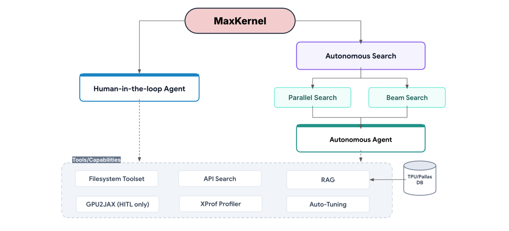
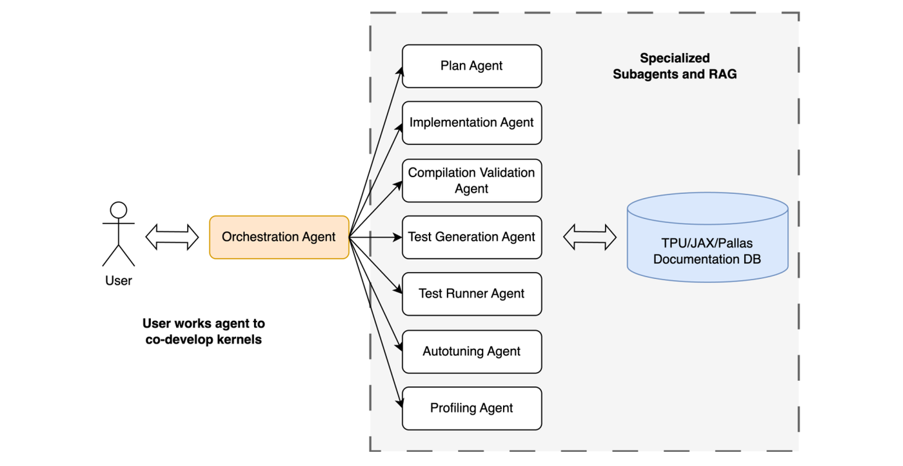
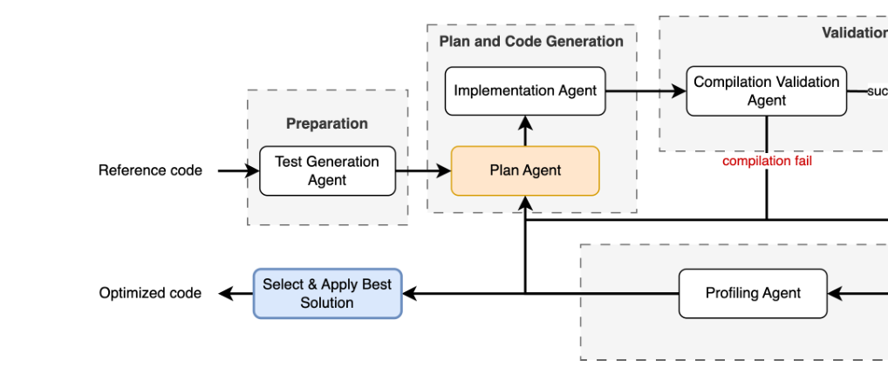
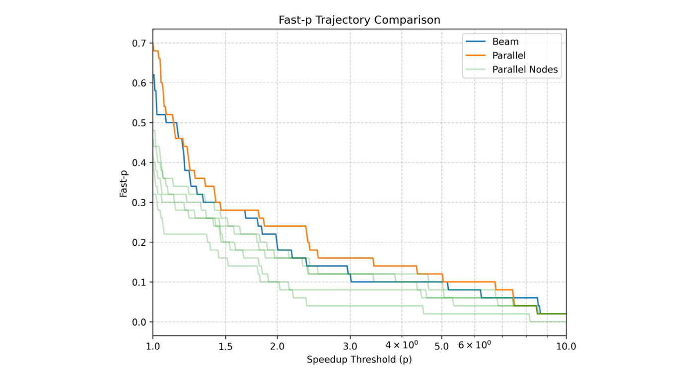
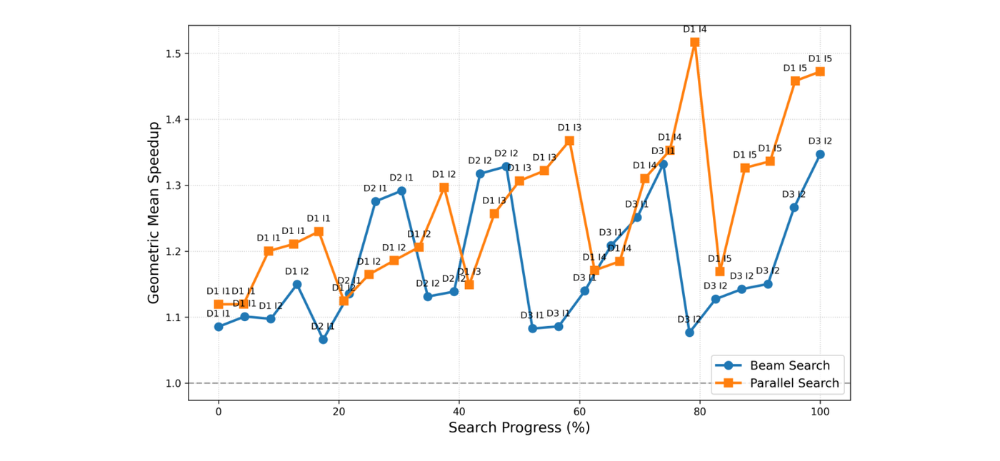

为加速器手写高性能kernel需要深厚的硬件功底：手动管理内存层级、编排DMA流水线、推导多维分块。这篇来自Google的论文提出MaxKernel，把LLM与实时编译器反馈结合起来，让agent自己完成TPU上Pallas kernel的生成与调优。
它提供三种运行范式：人在环、自主循环、基于图的自主搜索，共享同一套专职子agent池。结果相当能打：JaxBench上几何平均加速1.58倍，在存在人类手写kernel的8个生产负载上达到2.32倍，反超人工调优的2.02倍。
为加速器手写高性能自定义kernel是一项复杂的任务，需要深入的硬件知识：手动管理内存层级（HBM与SRAM/VMEM）、编排DMA流水线、推导多维分块策略。这项来自Google的工作提出MaxKernel：一个把LLM与实时编译器反馈结合起来的、面向TPU kernel开发的多agent系统。
它为TPU kernel开发实现了三种不同的范式：一是人在环（HITL）agent，用于协作式、分步的设计；二是自主（Auto）agent，执行全自动、由指标与trace驱动的优化循环；三是基于图的自主搜索，把Auto agent扩展成对整个设计空间的全局探索。三种范式共享同一个专职子agent池，负责规划、实现、自调试、测试与硬件profiling。
评估在JaxBench上进行：这是TPU上50个多样kernel任务的综合套件，另加来自最先进开源模型的复杂真实负载。结果显示MaxKernel能持续产出高度优化的实现，追平专家手工调优的基线，并在整个基准上带来显著性能：JAXBench上的几何平均加速达到1.58倍；在存在人类手写kernel的8个生产kernel上，几何平均加速达到2.32倍，超过人类手写的2.02倍。
MaxKernel是一个模块化的、基于agent的系统，把复杂的kernel优化拆解成若干聚焦的任务。它的核心是一组专职子agent，分别负责规划、实现、测试、自动调优与profiling；为了适配不同级别的用户控制与任务复杂度，系统提供三种执行范式。

系统把kernel生成拆成可管理、专门化的任务，以此获得更高的可靠性与灵活的编排能力。关键子agent包括：生成与修复一组，负责核心的合成逻辑，细分为规划agent（依据硬件规格与参考实现制定高层算法优化计划）与实现agent（把计划翻译成合法的Pallas代码），两者通过一个迭代的验证与修复循环保证语法与结构正确：它尝试编译生成的代码、解读编译器反馈、在进入执行之前消解错误；测试与验证一组，由测试合成agent构造完整测试套件，执行agent在目标硬件上安全运行这些测试，并按给定TPU代际动态指定的数值容差严格校验优化后的kernel；自动调优agent专门做超参数优化，系统性地探索配置空间（如块大小、分块维度等），为给定的kernel结构找到性能最好的硬件相关参数；profiling agent负责性能提取与瓶颈识别，捕获并分析低层trace。
由于跨硬件规格与代际的上下文规模巨大、而上下文窗口有限，系统还采用检索增强生成（RAG）管线，在不同执行阶段从外部知识库动态调取相关信息。知识库限定为静态来源，包括框架文档、内存布局指南与性能手册（如Pallas、Mosaic与XLA）；特别地，作者明确把人工调优的kernel代码排除在检索语料之外：因为本研究的一个核心目标，就是要评估agent在不依赖人工基线的前提下，能多大程度泛化并自主发现TPU特有的优化。
HITL模式使用一个编排agent充当交互式路由器，遵循「一个agent，然后等待」的范式。kernel生成流程被拆成若干离散阶段，用户可以自如地穿行其中：某个子agent完成它的阶段后，自动执行立即停止、控制权交还用户，于是开发者可以审查中间产物（例如优化计划的markdown或代码草稿）、给出明确反馈，或在系统进入下一阶段之前手动修正轨迹。对于需要专家直觉来引导LLM穿越困难设计空间的复杂kernel，这种模式尤其有效。

对于定义明确的优化任务与大规模基准测试，Auto agent把子agent串联成一条全自动的闭环优化管线，在无人干预的情况下反复执行「生成-评估」循环，实质上做的是局部爬山搜索。它有四个机制：迭代细化循环，编排器严格按「计划生成 → 实现 → 编译验证 → 测试执行 → 自动调优 → profiling」的顺序循环，并分解为四个阶段：准备阶段会依据参考代码合成完整测试套件并严格冻结，确保下游实现agent无法「刷分」或篡改验证标准；进入循环后，计划与代码生成阶段形成优化策略并翻译成候选Pallas kernel；验证与测试阶段校验可编译性、数值等价性与基线性能；优化与profiling阶段对合法kernel在各种分块配置上自动调优、并捕获硬件trace找瓶颈，而这一阶段的实测profiling反馈会直接喂给下一轮迭代的规划阶段。
其余三个机制是：健壮的失败处理，一旦出现致命失败（例如编译修复超出最大重试次数、或数值正确性检查失败），管线立即短路、保留错误上下文，编排器回到规划阶段另谋策略；Best-of-N状态回滚，为防止性能回退，编排器保存每一轮成功迭代的快照（kernel代码、编译状态、测试结果、延迟与profiling摘要），管线结束时自动把工作区回滚到最优（延迟最低）的合法解；编排器驱动的路径管理，为保证执行的确定性、防止自主循环中的状态损坏，根agent在初始化时显式指定所有产物的绝对文件路径，并把这一约束注入子agent提示与文件系统工具。

Auto agent做的是线性、迭代式的改进，因此仍容易陷入局部最优。为了更系统地探索优化空间，MaxKernel引入了基于图的自主搜索：把Auto agent封装进一个更大的搜索算法里，把kernel生成建模成形式化的搜索问题，由编排器维护一张搜索图。图中的每个节点代表Auto agent worker产出的某个kernel状态，包含源代码、优化计划与实测评估指标（如正确性与加速比）。这种图抽象带来几个明显的优势：可以无缝试验各种搜索启发式；能通过持久化的图状态从意外中断中优雅恢复；并且把每次节点扩展隔离到独立的agent会话，从而有效缓解LLM上下文窗口溢出。
搜索的一般流程是：节点选择与扩展（搜索编排器按特定启发式策略从前沿中挑选有希望的候选节点，例如在beam search中选取每一深度上加速比最高的节点）；并行worker执行（对每个选中节点，编排器把扩展任务分发给分布式worker，每个worker实例化一个Auto agent，独立应用新的优化策略并在并行中完成编译、测试与profiling）；状态更新（worker的结果作为新节点返回编排器，并入全局图，并更新搜索状态，如当前最优节点与搜索前沿）；收敛（这种并行、分支式的探索持续到满足终止条件，例如达到最大深度或目标延迟，最终返回图中的最优节点）。
目前MaxKernel实现了两种主要搜索算法。并行搜索是一种无约束的探索机制，它从给定基线出发并发执行多条相互独立的优化轨迹；由于这些路径彼此不竞争，每个worker都能分到更大的迭代预算，从而获得一段深而不被打断的时间去持续调试、培育复杂的代码改动。Beam搜索则是高度竞争的探索机制，它维护一个由最有希望的候选kernel组成的前沿（top-k），为了在多个深度上高效扩展这个前沿，它限制每个候选在剪枝前所能使用的迭代预算（更小），只对最即刻可行的策略进行分支。
作者在JaxBench上系统评估MaxKernel：这是50个多样硬件加速负载的精选套件，包含17个改编自流行LLM架构（例如复杂注意力机制）的常用算子，以及33个改编自KernelBench数据集的融合算子，覆盖注意力变体、稠密与稀疏线性代数、复杂损失函数与高度融合操作。除此之外，他们还展示了MaxKernel加速最先进开源模型kernel的能力：通过为诸如多头潜在注意力（MLA）、Qwen3-Next Gated DeltaNet与DeepSeek-V4稀疏注意力这类复杂真实负载自动生成高效的Pallas实现，MaxKernel相对高度优化的JAX与人工编写基线取得了显著的延迟与吞吐改进。
评估报告四项主要指标：编译率，即成功编译且没有目标硬件错误（如VMEM分配失败）的生成kernel占比；正确率，即在这些编译成功的kernel中，在一组测试输入上相对未优化的JAX参考实现输出数值等价的占比；几何平均加速，即相对标准XLA编译器基线、跨所有任务的几何平均加速（性能回退按1.0倍计）；以及fast_p占比，量化既严格功能正确、又超过特定加速阈值p的任务比例。
所有实测都在TPU v6e上、用MaxKernel专门的评估装置完成。对每个生成的kernel，框架动态合成一个隔离的测试环境，对照未优化的参考实现验证功能正确性；数值等价用jnp.allclose检查，多数情况下绝对与相对容差都设为1e-2，考虑到bf16在自定义硬件加速数学中的正常波动，部分任务容差放宽到最多1e-1。为测量真实硬件性能，评估装置直接接入XProf profiling工具，捕获精确的设备端执行时间，同时显式过滤掉主机侧的JAX分发与编译开销。
对比的方法有四种：Best-of-N（零样本），以JAX参考为条件的独立零样本补全，从N个样本中选最快且正确的（实验中N=100）；MaxKernel Auto，单轨迹迭代细化agent，限制5轮迭代，为考虑生成方差，每个负载跑5次独立运行并报告中位数与上下界；MaxKernel Parallel，用5条并发的Auto轨迹（各5轮），选取所有运行中最快的正确kernel，体现无引导并行扩展的上界；MaxKernel Beam，结构化、top-k引导的图搜索，beam宽度3、最大深度3、每个节点2条扩展分支，每节点内层评估严格限制在2轮迭代。实验中所有的LLM查询与agent交互都使用Gemini 3.1 Pro完成。
四种方法在JaxBench上的表现如下表。基线Best-of-N缺少真实运行的实时上下文，编译率与正确率只有10/50，几何平均加速接近基线（1.08倍）。引入迭代式验证与优化循环之后，Auto agent相对零样本基线显著提升，并且在产出可编译、数值正确的kernel上表现出很高的稳定性；但由于单次运行容易在优化过程中卡在次优的局部编译状态，其加速结果的方差较大。
这种高方差正是需要更宽的搜索空间探索的原因。并行搜索选取多个独立agent实例中的最佳结果，消除了编译失败（50/50编译、50/50正确），把几何平均加速推到1.58倍、fast1达到34/50。Beam搜索则提供有引导的结构化策略、顺序剪枝次优路径，取得同样有竞争力的50/50正确率、1.49倍几何平均加速与31/50的fast1。

从fast_p轨迹看：Auto的5次独立运行（图中浅色曲线）体现了单次优化强烈的性能波动；并行搜索因为取各独立运行的最优，轨迹自然位于所有单次曲线之上，取得最高成功率（例如p=1.0时68%、p=2.0时24%）；而Beam搜索的轨迹在大多数阈值下也稳定高于单次运行，说明有引导的结构化探索确实能剪掉次优编译路径、避开局部极小。
| 指标 | Best-of-N | MK Auto | MK Parallel | MK Beam |
|---|---|---|---|---|
| 编译率 | 10/50 | 49/50 [48, 50] | 50/50 | 50/50 |
| 正确率 | 10/50 | 48/50 [46, 49] | 50/50 | 50/50 |
| 几何平均加速 | 1.08 | 1.39 [1.19, 1.42] | 1.58 | 1.49 |
| fast1（>1× 且正确） | 6/50 | 22/50 [18, 28] | 34/50 | 31/50 |
与专家手工调优的Pallas参考相比，自动化策略的表现同样值得注意：并列搜索与Beam搜索的几何平均加速分别为2.32倍与1.78倍，与人工调优参考的2.02倍相当；逐个负载看，8个负载中有7个超过人工参考。例如在MLA注意力上，人类专家没能找到提升性能的kernel、结果低于基线，而两种agent方法都找到超过JAX/XLA基线的实现；在Paged Attention上，Beam搜索找到6.74倍加速的kernel，是人类参考2.41倍的两倍以上。唯一的例外是Ragged Paged Attention：人类专家的代码取得4.65倍，而agent是1.42倍。
| 负载 | XLA (ms) | 手写Pallas | MK Parallel | MK Beam |
|---|---|---|---|---|
| Flash Attention | 15.37 | 2.47× | 2.37× | 2.16× |
| GQA Attention | 32.73 | 2.40× | 2.51× | 3.02× |
| MLA Attention | 14.55 | 0.69× | 1.21× | 1.23× |
| Sparse Attention | 16.56 | 2.45× | 5.03× | 2.35× |
| Paged Attention | 7.52 | 2.41× | 6.74× | 2.01× |
| Ragged Paged Attention | 15.36 | 4.65× | 1.42× | 1.27× |
| GEMM | 5.41 | 1.03× | 1.03× | 1.02× |
| Megablox GMM | 3.11 | 1.69× | 2.39× | 1.84× |
| 几何平均（下限1×） | ： | 2.02× | 2.32× | 1.78× |
为了评估两种策略的搜索动态，作者按搜索深度与迭代把被评估的kernel按时间顺序分组，并在每步内按性能排序绘图，形成进展曲线（图6）。分析显示深度与广度之间存在明确的拓扑取舍：并行搜索的两端（性能分布的下界与上界）都持续抬升，峰值几何平均加速超过1.51倍，说明长视野、独立的精修让agent有足够机会逐步调试复杂的编译错误、慢慢打磨精细的内存布局，而不必担心被过早剪枝。
Beam搜索则更侧重拓宽Pareto前沿：进展曲线在前两个深度成功爬升，扩展到第三个深度时出现平台期。这个平台反映了Pallas这类硬件特定框架中底层kernel优化的脆弱本质：Beam搜索在每个深度上强制了更浅的预算（2轮迭代对并行搜索的5轮），因此选择机制偶尔会惩罚那些需要更长视野才能解决严格内存约束或lowering失败的激进多步优化。不过Beam的结构化广度仍具优势：在那些局部极小值多样、容易编译、且不同算法形式（如不同循环顺序或数学归约）能立即给出可靠性能信号的场景里，它能广泛探索并保留一组多样的顶级候选，是发现最优算法的有力策略。

作者还针对若干近期模型，与高度优化的JAX基线和人工编写的Pallas kernel做了大量基准测试，评估延迟、吞吐与计算效率的改进，同时展示框架处理执行健壮性问题的能力。
在多头潜在注意力v1架构上，相对人工编写的Pallas基线，MaxKernel把延迟降低8.68%、吞吐提升9.50%。在标准JAX实现上，改进幅度更大：对Qwen3-Next Gated DeltaNet，用MaxKernel生成的kernel替换前向与反向实现，前向延迟降低1.63倍、整体训练步加速最多4.70倍；在DeepSeek-V4稀疏注意力上，MaxKernel在所有形状配置上都优于JAX基线，从小解码形状的2.36倍到用户自定义prefill操作的7.85倍。
MaxKernel也有效优化了内存受限的操作：通过把中间矩阵完整保留在向量内存中、避免代价高昂的HBM刷写，它为Mamba v2的状态空间对偶算法带来1.10倍加速，为压缩稀疏注意力的StreamIndex_topk操作带来1.66倍加速。
除了纯性能优化，MaxKernel还展示了在kernel调试与健壮性上的价值：作者用它解决了Ragged Page Attention v3（RPAv3）prefill模式下的崩溃与死锁问题：MaxKernel自动实现了保护性的ALU clamp指令来正确处理左填充输入，避免负的切片尺寸、确保DMA预取干净执行，从而以可忽略的性能开销恢复了无崩溃运行。
| 架构 | 负载 / 指标 | 基线 | MaxKernel | 提升 |
|---|---|---|---|---|
| MLA v1 | 延迟 (ms) | 3.127（Pallas） | 2.856 | +8.68% |
| MLA v1 | 吞吐 (TFLOPS) | 116.735（Pallas） | 127.825 | +9.50% |
| Qwen3-Next GDN | 前向 (ms) | 17.09（JAX） | 10.47 | 1.63× |
| Qwen3-Next GDN | 训练步（前向+反向, ms） | 84.51（JAX） | 17.99 | 4.70× |
| DSv4 Sparse Attn | Prefill (ms) | 27.08（JAX） | 3.449 | 7.85× |
| DSv4 Sparse Attn | Decode (ms) | 0.047（JAX） | 0.02 | 2.36× |
| Mamba v2 (SSD) | 前向 (ms) | 0.211（JAX） | 0.192 | 1.10× |
| StreamIndex_topk | 前向 (ms) | 0.415（JAX） | 0.250 | 1.66× |
MaxKernel表明，agent系统可以成功处理底层加速器编程的复杂性：一个由上下文合成、自动诊断、基于XProf的瓶颈识别与结构化优化启发式组成的harness，能够加速TPU上的爬山优化，并在JaxBench上达到1.58倍的几何平均加速（在XLA优化之上）。
未来工作包括：试验其他优化算法，例如通过自动研究思路实现的进化搜索或贪心搜索；利用来自过去实验的动态、不断演进的知识库；以及探索有状态的混合优化方案，以处理不同优化方法之间探索与利用的取舍。
参考：https://arxiv.org/pdf/2609.04523